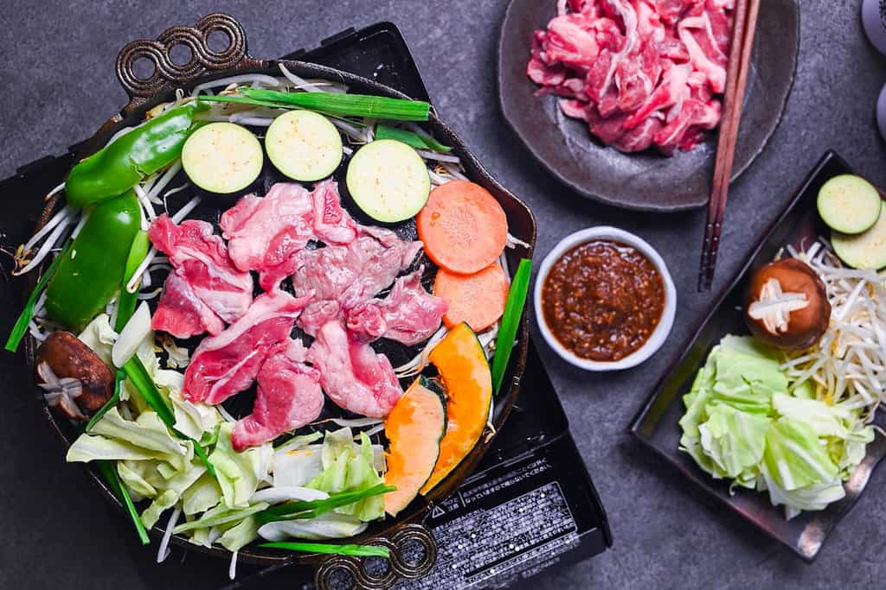
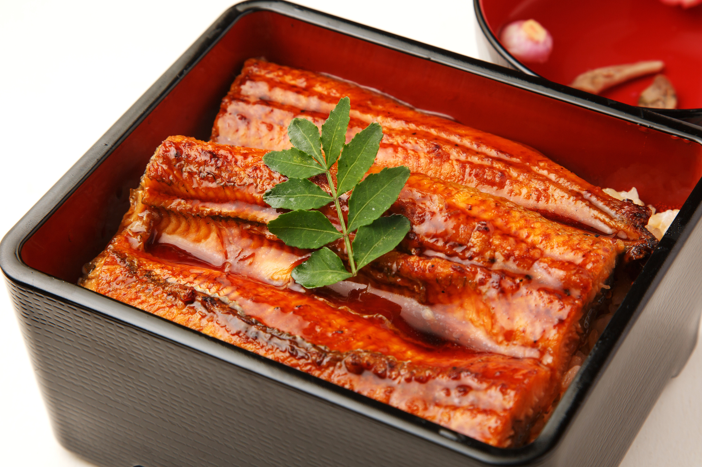
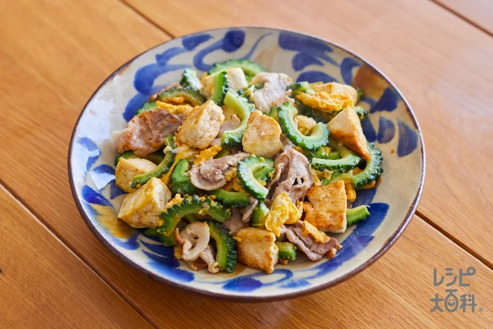

What determines regional cuisines?
There are some components such as...
- Trade
- Cooking Traditions
Famous Japanese regional cuisine
These are famous, popular, and delicious!
-

- Unaju - grilled eel served over rice in a lacquered box(Shizuoka).  
Click here to learn about Japanese regional cuisine with cute illustration!